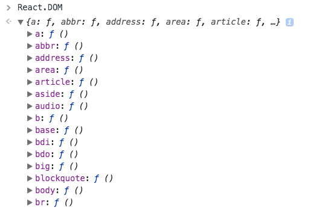

It's really not a new concept, but React took building UIs a lot more declaratively than with HTML templates:
The opposite of declarative is iterative. A common example of an iterative approach is looking up elements in the DOM using jQuery or DOM events. You tell the browser exactly what to do, instead of telling it what you need.
The React declarative approach abstracts that for us. We just tell React we want a component to be rendered in a specific way, and we never have to interact with the DOM to reference it later.
An immutable variable can never be changed. To update its value, you create a new variable. The same applies to objects and arrays. Instead of changing an array, to add a new item you create a new array by concatenating the old array, plus the new item. An object is never updated, but copied before changing it.
This applies to React in many places. For example, you should never mutate the state property of a component directly, but only through the setState() method.
In Redux, you never mutate the state directly, but only through reducers, which are functions.
What is purity, a pure function and a pure component?
In JavaScript, when a function does not mutate objects but just returns a new object, it's called a pure function.
A function, or a method, in order to be called pure should not cause side effects and should return the same output when called multiple times with the same input.
A pure function takes an input and returns an output without changing the input nor anything else. Its output is only determined by the arguments.
React applies this concept to components. A React component is a pure component when its output is only dependant on its props.
All functional components are pure components:
const Button = props => {
return <button>{props.message}</button>
}
Class components can be pure if their output only depends on the props:
class Button extends React.Component {
render() {
return <button>{this.props.message}</button>
}
}
Use an outer component to expand and specialize a more generic component:
const Button = props => {
return <button>{props.text}</button>
}
const SubmitButton = () => {
return <Button text="Submit" />
}
const LoginButton = () => {
return <Button text="Login" />
}
const Button = props => {
return <button onClick={props.onClickHandler}>{props.text}</button>
}
const LoginButton = props => {
return <Button text="Login" onClickHandler={props.onClickHandler} />
}
const Container = () => {
const onClickHandler = () => {
alert('clicked')
}
return <LoginButton onClickHandler={onClickHandler} />
}
The props.children property allows you to inject components inside other components.
The component needs to output props.children in its JSX:
const Sidebar = props => {
return <aside>{props.children}</aside>
}
and you embed more components into it in a transparent way:
<Sidebar>
<Link title="First link" />
<Link title="Second link" />
</Sidebar>
When a component receives a component as a prop and returns a component, it's called higher order component.
this concept means that data has one, and only one, way to be transferred to other parts of the application.
In React this means that:
The view is a result of the application state. State can only change when actions happen. When actions happen, the state is updated.
this has some key advantages:
A state is always owned by one Component. Any data that's affected by this state can only affect Components below it: its children. Changing state on a Component will never affect its parent, or its siblings, or any other Component in the application: just its children. This is the reason that the state is often moved up in the Component tree, so that it can be shared between components that need to access it.
Best Practices:-
React is a JavaScript library for building user interfaces across a variety of platforms(VR, Mobile). React gives you a powerful mental model to work with and helps you build user interfaces in a declarative and component driven way.
The DOM, or Document Object Model, is a programming interface that allows your JavaScript programs to interact with different types of documents(HTML, XML, and SVG). There are standards driven specifications for it, which means that a public working group has created a standard set of features it should have and ways it should behave. Although other implementations exist, the DOM is mostly synonymous with web browsers like Chrome, Firefox, and Edge.
The DOM provides a structured way of accessing, storing, and manipulating different parts of a document. At a high level, the DOM is a tree structure that reflects the hierarchy of an XML document. This tree structure is comprised of subtrees that are in turn made of nodes. You’ll probably know these as the divs and other elements that make up your web pages and applications.
Whenever you use a method in JavaScript that accesses, modifies, or storesinformation related to something in an HTML document, you’re almost certainly using the DOM or its related APIs (see https://developer.mozilla.org/enUS/docs/Web/API formore on web APIs). This means that not all the methods you’ve used in JavaScript are necessarily part of the JavaScript language itself (document.findElemenyById,querySelectorAll, alert, and so on). They’re part of the bigger collection of web APIs—the DOM and other APIs that go into a browser—that allow you to interact with documents.
The web APIs in browsers let us interact with web documents with JavaScript via the DOM. Thereare, however, certain pain points of working directly with the DOM in larger web applications. Generally, these pain points arise in the area of change detection. Part of the reason for that problem is the way browsers handle interactions with the DOM. When a DOM element is accessed, modified, or created, the browser is often performing a query across a structured tree to find a given element. That’s just to access an element, which is usually only the first part of an update. More often than not, it may have to reperform layout, sizing, and other actions as part of a mutation—all of which can tend to be computationally expensive. A virtual DOM won’t get you around this, but it can help updates to the DOM be optimized to account for these constraints.
React’s diffing and update procedure - When a change happens, React determines differences
between the actual and in-memory DOMs. Then it performs an efficient update to the browser’s DOM. This process
is often referred to as a diff (“what changed?") and patch (“update only what changed") process.
Performance is a key feature of React, but it’s secondary to simplicity. The virtual DOM is part of what enables you to defer thinking about complicated state logic and focus on other, more important parts of your application. Together, speed and simplicity mean happier users and happierdevelopers—a winwin!
A React element is a light, stateless, immutable primitive in React. There are two types: React DOM Element and React Component Element.
React.createElement takes a string or component (either a class extending React.Component or a function), a props object, and children and returns a Reactelement.
React DOM Elements are virtual representations of DOM elements. React Component Elements reference either a function or a class corresponding to a React component.
// ES6 and latest way to create react component
import React, { Component } from 'react'; // importing member and default export together in next-gen JavaScript by Babel compiler
class App extends Component {
render() {
return (
<h1>Heading</h1>
);
}
}
export default App;
// previos and ES6 way to create react component when full React import in 'react' identifier.
import React from 'react';
class App extends React.Component {
render() {
return (
<h1>Heading</h1>
);
}
}
export default App;
// previos and ES6 way to create react component when full React import in 'react' identifier.
import React from 'react';
// create react element without JSX
// React.createElement(component, props, ...childrenComponent)
class Hello extends React.Component {
render() {
return React.createElement('div', null, `Hello ${this.props.toWhat}`);
}
}
ReactDOM.render(
React.createElement(Hello, {toWhat: 'World'}, null),
document.getElementById('root')
);
// If you don’t use ES6 yet, you may use the create-react-class module instead to define a React component
var createReactClass = require('create-react-class');
var Greeting = createReactClass({
render: function() {
return <h1>Hello, {this.props.name}</h1>;
}
});
// create “function components" with plain Javascript without Class
// it accepts a single “props" (which stands for properties) object argument with data and returns a React element.
function Welcome(props) {
return <h1>Hello, {props.name}</h1>;
}
Use ReactDOM.render() method manage components or react elements.
React DOM needs an element of type React Element and a DOM element to run render action..
// ReactDOM.render(ReactElement, DOMcontainer[, callback])
const element = <h1>Hello, world</h1>;
ReactDOM.render(element, document.getElementById('root'));
React elements are immutable. Once you create an element, you can’t change its children or attributes. An element is like a single frame in a movie: it represents the UI at a certain point in time.
Only way to update the UI is to create a new element, and pass it to ReactDOM.render().
function tick() {
const element = (
<div>
<h1>Hello, world!</h1>
<h2>It is {new Date().toLocaleTimeString()}.</h2>
</div>
);
ReactDOM.render(element, document.getElementById('root'));
}
setInterval(tick, 1000);
class App extends Component { render() { return (); } }
import React, { Component } from 'react';
import { render } 'reactdom';
const node = document.getElementById('root');
const root = React.createElement('div', {},
React.createElement('h1', {}, "Hello, world!",
React.createElement('a', {href: 'mailto:mark@ifelse.io'},
React.createElement('h1', {}, "React In Action"),
React.createElement('em', {}, "...and now it really is!")
)
)
);
render(root, node); //
"create-react-app", a command-line interface (CLI) tool that allows us to set up a React-based application without need to configure any of the aforementioned tools.
// Install "Create react app" globally
npm uninstall -g create-react-app
npm install -g create-react-app
create-react-app --version
// Start to create "my-react-app" project in your local directory.
npx create-react-app my-react-app
You need to add a new DOM element with an ID of root as well as some basic code that uses
React
DOM.
Define root id to render <App /> component inside.
// index.html inside public folder
<!DOCTYPE html>
<html lang="en">
<head>
<meta charset="utf-8">
<link rel="shortcut icon" href="%PUBLIC_URL%/favicon.ico">
<meta name="viewport" content="width=device-width, initial-scale=1, shrink-to-fit=no">
<meta name="theme-color" content="#000000">
<link rel="manifest" href="%PUBLIC_URL%/manifest.json">
<title>React App</title>
</head>
<body>
<div id="root"></div>
</body>
</html>
Call app.js component's module to render in root id tag
// index.js file inside src folder
import React from 'react';
import ReactDOM from 'react-dom';
import './index.css';
import App from './App';
import * as serviceWorker from './serviceWorker';
ReactDOM.render(<App />, document.getElementById('root'));
// If you want your app to work offline and load faster, you can change
// unregister() to register() below. Note this comes with some pitfalls.
// Learn more about service workers: http://bit.ly/CRA-PWA
serviceWorker.unregister();
The react module provides functionality for component creation and state management. The react-dom module is the glue between React components and the HTML DOM.
npm run build
The result of running this command is a new BUILD folder where we will find all of the files that we need to move into a production environment. The command carries out some processing on the files of our development environment. Put simply, it translates all of the ES2015 code we wrote into ES5 compatible code, so that it is also available for older browsers. This process is called transpilation. In addition, it reduces the size of the code itself, allowing for faster downloading over the network. This process is called minification. Finally, it takes the files in our development environment and combines them into a few files, called bundles, in order to decrease network requests.
By default, Create React App produces a build assuming your app is hosted at the server root.
To override this, specify the homepage in your package.json, for example:
"homepage": "http://mywebsite.com/relativepath",
JSX is a technology that was introduced by React.
Although React can work completely fine without using JSX, it’s an ideal technology to work with components, so React benefits a lot from JSX.
You might think that using JSX is like mixing HTML and JavaScript. But this is not true, because what you are really doing when using JSX syntax is writing a declarative syntax of what a component UI should be.
And you’re describing that UI not using strings, but instead using JavaScript.
const element = <h1>Hello, world!</h1>
It looks like a strange mix of JavaScript and HTML, but in reality it’s all JavaScript.
Inside a JSX expression, attributes can be inserted very easily:
const myId = 'test'
const element = <h1 id={myId}>Hello, world!</h1>
You just need to pay attention when an attribute has a dash (-) which is converted to camelCase syntax instead, and these 2 special cases:
class becomes classNamefor becomes htmlForbecause they are reserved words in JavaScript.
In Below code, wrapped the 2 components into a div. Why? Because the render() function can only
return a
single node.
<div>
<BlogPostsList />
<Sidebar />
</div>
JSX code must be first transformed into regular JS to excute on browser.
In the below code, JSX is transpiled into plain JS by transpiler.
ReactDOM.render(
<div id="test">
<h1>A title</h1>
<p>A paragraph</p>
</div>,
document.getElementById('myapp')
)
Into Plain JS
ReactDOM.render(
React.DOM.div(
{ id: 'test' },
React.DOM.h1(null, 'A title'),
React.DOM.p(null, 'A paragraph')
),
document.getElementById('myapp')
)
At the time of writing the most popular way to perform the transpilation is to use Babel.
JSX accepts any kind of JavaScript mixed into it.
Whenever you need to add some JS, just put it inside curly braces {}. For example here’s how to use a constant value defined elsewhere:
const paragraph = 'A paragraph'
ReactDOM.render(
<div id="test">
<h1>A title</h1>
<p>{paragraph}</p>
</div>,
document.getElementById('myapp')
)
Curly braces accept any JS code:
ReactDOM.render(
<table>
{rows.map((row, i) => {
return <tr>{row.text}</tr>
})}
</div>,
document.getElementById('myapp')
)
As you can see we nested JavaScript inside a JSX that defined inside a JavaScript which nested in a JSX. You can go as deep as you need.
JSX resembles a lot HTML, but it’s actually a XML syntax.
Just like in XHTML, if you have ever used it, you need to close all tags: no more <br> but
instead use the self-closing tag: <br /> (the same goes for other tags)
In HTML you’ll find attributes without any case (e.g. onchange). In JSX, they are renamed to
their camelCase equivalent:
onchange => onChangeonclick => onClickonsubmit => onSubmitDue to the fact that JSX is JavaScript, and class is a reserved word, you can’t write
<p class="description">
you need to use
<p className="description">
The same applies to for which is translated to htmlFor.
You can't write inline style tag in JSX. The JSX style attribute only accepts an object. This means you define properties in an object:
var divStyle = {
color: 'white'
}
ReactDOM.render(<div style={divStyle}>Hello World!</div>, mountNode)
or
ReactDOM.render(<div style={{ color: 'white' }}>Hello World!</div>, mountNode)
Inline styles in JSX are good until you need to
:hover)::first-letter)value and defaultValueThe value attribute always holds the current value of the field.
The defaultValue attribute holds the default value that was set when the field was created.
This helps solve some weird behavior of regular DOM interaction when inspecting input.value and
input.getAttribute('value') returning one the current value and one the original
default value.
This also applies to the textarea field, e.g.
<textarea>Some text</textarea>
but instead
<textarea defaultValue={'Some text'} />
For select fields, instead of using
<select>
<option value="x" selected>
...
</option>
</select>
use
<select defaultValue="x">
<option value="x">...</option>
</select>
To mitigate the ever present risk of XSS exploits, JSX forces automatic escaping in expressions.
This means that you might run into issues when using an HTML entity in a string expression.
You expect the following to print © 2017:
<p>{'© 2017'}</p>
But it’s not, it’s printing © 2017 because the string is escaped.
To fix this you can either move the entities outside the expression:
<p>© 2017</p>
or by using a constant that prints the Unicode representation corresponding to the HTML entity you need to print:
<p>{'\u00A9 2017'}</p>
To add white space horizontal/vertical in JSX there are 2 rules:
<p>
Something
{' '}becomes
{' '}this
</p>
or by embedding the string in a space expression:
<p>
Something
{' becomes '}
this
</p>
In JSX a common operation is assigning values to attributes.
Instead of doing it manually, e.g.
<div>
<BlogPost title={data.title} date={data.date} />
</div>
you can pass
<div>
<BlogPost {...data} />
</div>
and the properties of the data object will be used as attributes automatically, thanks to the ES6
spread operator
If you have a set of elements you need to loop upon to generate a JSX partial, you can create a loop, and then add JSX to an array:
const elements = [] //..some array
const items = []
for (const [index, value] of elements.entries() {
items.push(<Element key={index} />)
}
Now when rendering the JSX you can embed the items array simply by wrapping it in curly braces:
const elements = ['one', 'two', 'three'];
const items = []
for (const [index, value] of elements.entries() {
items.push(<li key={index}>{value}</li>)
}
return (
<div>
{items}
</div>
)
You can do the same directly in the JSX, using map instead of a for-of loop:
const elements = ['one', 'two', 'three'];
return (
<ul>
{elements.map((value, index) => {
return <li key={index}>{value}</li>
})}
</ul>
)
React makes it very simple: everything is a component. A component is one isolated piece of interface.
A user interface is an aggregate of components, and the whole React application is an aggregate of components.
The container components are components that do not have a relevant visual effect. Their main role is to group other components, that is, contain other components.
The presentational components are components that display data in some graphical form.
The next 2 lines are equivalent, they do the same thing. One with JSX, one without, by
injecting <h1>Hello World!</h1> into an element with id app.
import React from 'react'
import ReactDOM from 'react-dom'
ReactDOM.render(
<h1>Hello World!</h1>,
document.getElementById('app')
)
ReactDOM.render(
React.DOM.h1(null, "Hello World!"),
document.getElementById('app')
)
See, React.DOM exposed us an h1 component. Which other HTML tags are available?
All of them! You can inspect what React.DOM offers by typing it in the Browser Console:

There are 2 ways to define a component in React.
A function component:
const BlogPostExcerpt = () => {
return (
<div>
<h1>Title</h1>
<p>Description</p>
</div>
)
}
A class component:
import React, { Component } from 'react'
class BlogPostExcerpt extends Component {
render() {
return (
<div>
<h1>Title</h1>
<p>Description</p>
</div>
)
}
}
Up until recently, class components were the only way to define a component that had its own state, and could access the lifecycle methods so you could do things when the component was first rendered, updated or removed.
React Hooks changed this, so our function components are now much more powerful than ever and I believe we'll see fewer and fewer class components in the future, although it will still be perfectly valid way to create components.
There is also a third syntax which uses the ES5 syntax, without the classes:
import React from 'react'
React.createClass({
render() {
return (
<div>
<h1>Title</h1>
<p>Description</p>
</div>
)
}
})
A stateless component does not manage internal state, and is just a function:
const BlogPostExcerpt = () => {
return (
<div>
<h1>Title</h1>
<p>Description</p>
</div>
)
}
A stateful component is a class, which manages state in its own properties:
import React, { Component } from 'react'
class BlogPostExcerpt extends Component {
render() {
return (
<div>
<h1>Title</h1>
<p>Description</p>
</div>
)
}
}
There is a third syntax which uses the ES5 syntax, without the classes:
import React from 'react'
React.createClass({
render() {
return (
<div>
<h1>Title</h1>
<p>Description</p>
</div>
)
}
})
React classes also gives you state(data) that can persist with the component. What’s state? Another way to think about it is as information about something at agiven time. You could, for example, get the “state" of your friend by asking “How are you today?"
There are two general types of state: mutable and immutable. A simple way to thinkabout the difference between them is to think in terms of time. Can something change after being created? If so, it can be called mutable. If not, it can be called immutable.
In React, components created as JavaScript classes that extend React.Component may have both mutable and immutable state, whereas components created from functions(stateless functional components) only have access to immutable state (props).
In React components are often divided into 2 big buckets: presentational components and container components. Each of those have their unique characteristics. Presentational components are mostly concerned with generating some markup to be outputted. They don't manage any kind of state, except for state related the the presentation. Container components are mostly concerned with the "backend" operations.
They might handle the state of various sub-components. They might wrap several presentational components. They might interface with Redux. As a way to simplify the distinction, we can say presentational components are concerned with the look, container components are concerned with making things work.
For example, this is a presentational component. It gets data from its props, and just focuses on showing an element:
const Users = props => (
<ul>
{props.users.map(user => (
<li>{user}</li>
))}
</ul>
)
On the other hand this is a container component. It manages and stores its own data, and uses the presentational component to display it.
class UsersContainer extends React.Component {
constructor() {
this.state = {
users: []
}
}
componentDidMount() {
axios.get('/users').then(users =>
this.setState({ users: users }))
)
}
render() {
return <Users users={this.state.users} />
}
}
Props is how Components get their properties. Starting from the top component, every child component gets its props from the parent. In a function component, props is all it gets passed, and they are available by adding props as the function argument:
const BlogPostExcerpt = props => {
return (
<div>
<h1>{props.title}</h1>
<p>{props.description}</p>
</div>
)
}
In a class component, props are passed by default. There is no need to add anything special, and they are accessible
as this.props in a Component instance.
import React, { Component } from 'react'
class BlogPostExcerpt extends Component {
render() {
return (
<div>
<h1>{this.props.title}</h1>
<p>{this.props.description}</p>
</div>
)
}
}
Passing props down to child components is a great way to pass values around in your application. A component either holds data (has state) or receives data through its props.
It gets complicated when:
Props are immutable (not modifiable), so if you need to change data, you need mutable state.
When initializing a component, pass the props in a way similar to HTML attributes:
const desc = 'A description'
//...
<BlogPostExcerpt title="A blog post" description={desc} />
import React, { Component } from 'react'
class BlogPostExcerpt extends Component {
render() {
return (
<div>
<h1>{this.props.title}</h1>
<p>{this.props.description}</p>
</div>
)
}
}
In a stateful component(class based), props are passed by default. There is no need to add anything special, and they are
accessible as this.props in a Component instance.
In a stateless component(function based), props is all it gets passed, and they are available by adding props as the
function argument:
const BlogPostExcerpt = props => {
return (
<div>
<h1>{props.title}</h1>
<p>{props.description}</p>
</div>
)
}
Redux was traditionally very popular for this, and this is the reason it’s included in many tutorials.
Recently React (in version 16.3.0) introduced the Context API, which makes Redux redundant for this simple use case.
Redux is still useful if you:
but it’s no more “required” for any React application.
If any value is not required we need to specify a default value for it if it’s missing when the Component is initialized.
BlogPostExcerpt.propTypes = {
title: PropTypes.string,
description: PropTypes.string
}
BlogPostExcerpt.defaultProps = {
title: '',
description: ''
}
Some tooling like ESLint have the ability to enforce defining the defaultProps for a Component with some propTypes not explicitly required.
A special prop is children. That contains the value of anything that is passed in the
body
of the component, for example:
<BlogPostExcerpt title="A blog post" description={desc}>
Something
</BlogPostExcerpt>
In this case, inside BlogPostExcerpt we could access “Something” by looking up
this.props.children.
While Props allow a Component to receive properties from its parent, be “instructed” to print some data for example, state allows a component to take life on itself, and be independent of the surrounding environment.
Remember: only class-based Components can have a state, so if you need to manage state in a stateless(function-based) Component, you first need to “upgrade” it to a Class component:
const BlogPostExcerpt = () => {
return (
<div>
<h1>Title</h1>
<p>Description</p>
</div>
)
}
becomes:
import React, { Component } from 'react'
class BlogPostExcerpt extends Component {
render() {
return (
<div>
<h1>Title</h1>
<p>Description</p>
</div>
)
}
}
Since JavaScript is a dynamically typed language, we don’t really have a way to enforce the type of a variable at compile time, and if we pass invalid types, they will fail at runtime or give weird results if the types are compatible but not what we expect.
Flow and TypeScript help a lot, but React has a way to directly help with props types, and even before running the code, our tools (editors, linters) can detect when we are passing the wrong values:
import PropTypes from 'prop-types'
import React from 'react'
class BlogPostExcerpt extends Component {
render() {
return (
<div>
<h1>{this.props.title}</h1>
<p>{this.props.description}</p>
</div>
)
}
}
BlogPostExcerpt.propTypes = {
title: PropTypes.string,
description: PropTypes.string
}
export default BlogPostExcerpt
These are the fundamental types we can accept:
We can accept one of two types:
PropTypes.oneOfType([
PropTypes.string,
PropTypes.number
])
We can accept one of many values:
PropTypes.oneOf(['Test1', 'Test2'])
We can accept an instance of a class:
PropTypes.instanceOf(Something)
We can accept any React node:
PropTypes.node
or even any type at all:
PropTypes.any
Arrays have a special syntax that we can use to accept an array of a particular type:
PropTypes.arrayOf(PropTypes.string)
Objects, we can compose an object properties by using
PropTypes.shape({
color: PropTypes.string,
fontSize: PropTypes.number
})
Appending isRequired to any PropTypes option will cause React to return an error if that property is
missing:
PropTypes.arrayOf(PropTypes.string).isRequired,
PropTypes.string.isRequired
State is similar to props, but it is private and fully controlled by the component.
Only Components defined as classes have some Local state feature.
States are mutable. But can't be modified directlty. You need to use setState().
State can be pass down to child component via Props. When state value change, child component will be re-render automatically.
this.state.date in the render() method or component same as you used props.In the Component constructor, initialize this.state. For example the BlogPostExcerpt component might
have a clicked state:
class BlogPostExcerpt extends Component {
constructor(props) {
super(props)
this.state = { clicked: false }
}
render() {
return (
<div>
<h1>Title</h1>
<p>Description</p>
</div>
)
}
}
The clicked state can be accessed by referencing this.state.clicked:
class BlogPostExcerpt extends Component {
constructor(props) {
super(props)
this.state = { clicked: false }
}
render() {
return (
<div>
<h1>Title</h1>
<p>Description</p>
<p>Clicked: {this.state.clicked}</p>
</div>
)
}
}
A state should never be mutated by using
this.state.clicked = true
Instead, you should always use setState() instead, passing it an object:
this.setState({ clicked: true })
The object can contain a subset, or a superset, of the state. Only the properties you pass will be mutated, the ones omitted will be left in their current state.
setState()The reason is that using this method, React knows that the state has changed. It will then start the series of events that will lead to the Component being re-rendered, along with any DOM update.
This leads us to Unidirectional Data Flow
A state is always owned by one Component. Any data that’s affected by this state can only affects Components below it: its children.
Changing a state on a Component will never affects its parent, or its siblings, or any other Component in the application: just its children.
This is the reason many times the state is moved up in the Components tree.
Because of the Unidirectional Data Flow rules, if two components need to share a state, the state needs to be moved up to a common ancestor.
Many times the closest ancestor is the best place to manage the state, but it’s not a mandatory rule.
The state is passed down to the components that need that value via props:
class Converter extends React.Component {
constructor(props) {
super(props)
this.state = { currency: '€' }
}
render() {
return (
<div>
<Display currency={this.state.currency} />
<CurrencySwitcher currency={this.state.currency} />
</div>
)
}
}
The state can be mutated by a child component by passing a mutating function down as a prop:
class Converter extends React.Component {
constructor(props) {
super(props)
this.state = { currency: '€' }
}
handleChangeCurrency = event => {
this.setState({ currency: this.state.currency === '€' ? '$' : '€' })
}
render() {
return (
<div>
<Display currency={this.state.currency} />
<CurrencySwitcher
currency={this.state.currency}
handleChangeCurrency={this.handleChangeCurrency}
/>
</div>
)
}
}
const CurrencySwitcher = props => {
return (
<button onClick={props.handleChangeCurrency}>
Current currency is {props.currency}. Change it!
</button>
)
}
const Display = props => {
return <p>Current currency is {props.currency}.</p>
}
What's the difference between state and props in React?
In a React component, props are variables passed to it by its parent component. State on the other hand is still variables, but directly initialized and managed by the component.
The state can be initialized by props.
For example, a parent component might include a child component by calling
<ChildComponent />
The parent can pass a prop by using this syntax:
<ChildComponent color=green />
Inside the ChildComponent constructor we could access the prop:
class ChildComponent extends Component {
constructor(props) {
super(props)
console.log(props.color)
}
}
and any other method in this class can reference the props using this.props.
Props can be used to set the internal state based on a prop value in the constructor, like this:
class ChildComponent extends Component {
constructor(props) {
super(props)
this.state.colorName = props.color
}
}
Of course a component can also initialize the state without looking at props.
In this case there’s nothing useful going on, but imagine doing something different based on the prop value, probably setting a state value is best.
Props should never be changed in a child component, so if there’s something going on that alters some variable, that variable should belong to the component state.
Props are also used to allow child components to access methods defined in the parent component. This is a good way to centralize managing the state in the parent component, and avoid children to have the need to have their own state.
Most of your components will just display some kind of information based on the props they received, and stay stateless.
Handling events with React elements is very similar to handling events on DOM elements. There are some syntactic differences:
preventDefault explicitly.
// <button onclick="activateLasers()">
// Activate Lasers
// </button>
<button onClick={activateLasers}>
Activate Lasers
</button>
const CurrencySwitcher = (props) => {
return (
<button onClick={props.handleChangeCurrency}>
Current currency is {props.currency}. Change it!
</button>
)
}
If you’ve been using JavaScript for a while, this is just like plain old JavaScript event handlers, except that this time you’re defining everything in JavaScript, not in your HTML, and you’re passing a function, not a string.
The actual event names are a little bit different because in React you use camelCase for everything, so
onclick
becomes onClick, onsubmit becomes onSubmit.
For reference, this is old school HTML with JavaScript events mixed in:
<button onclick="handleChangeCurrency()">
...
</button>
It’s a convention to have event handlers defined as methods on the Component class:
class Converter extends React.Component {
handleChangeCurrency = (event) => {
this.setState({ currency: this.state.currency ===
'€' ? '$' : '€' })
}
}
All handlers receive an event object that adheres, cross-browser, to the W3C UI Events spec.
this in methodsDon’t forget to bind methods. The methods of ES6 classes by default are not bound. What this means is
that this is not defined unless you define methods as arrow functions:
class Converter extends React.Component {
handleClick = (e) => { /* ... */ }
//...
}
when using the the property initializer syntax with Babel (enabled by default in create-react-app),
otherwise you need to bind it manually in the constructor:
class Converter extends React.Component {
constructor(props) {
super(props)
this.handleClick = this.handleClick.bind(this)
}
handleClick(e) {}
}
There are lots of events supported, here’s a summary list.
React class components can have hooks for several lifecycle events. Hooks allow function components to access them too, in a different way.
During the lifetime of a component, there's a series of events that gets called, and to each event you can hook and provide custom functionality.
First, there are 3 phases in a React component lifecycle:
Let's see those 3 phases in detail and the methods that get called for each.
When mounting you have 4 lifecycle methods before the component is mounted in the DOM: the constructor,
getDerivedStateFromProps, render and componentDidMount.
The constructor is the first method that is called when mounting a component.
You usually use the constructor to set up the initial state using this.state = ...
When the state depends on props, getDerivedStateFromProps can be used to update the state based on the props value.
It was added in React 16.3, aiming to replace the componentWillReceiveProps deprecated method.
In this method you haven't access to this as it's a static method.
It's a pure method, so it should not cause side effects and should return the same output when called multiple times with the same input.
Returns an object with the updated elements of the state (or null if the state does not change)
From the render() method you return the JSX that builds the component interface.
It's a pure method, so it should not cause side effects and should return the same output when called multiple times with the same input.
This method is the one that you will use to perform API calls, or process operations on the DOM.
When updating you have 5 lifecycle methods before the component is mounted in the DOM: the getDerivedStateFromProps, shouldComponentUpdate, render, getSnapshotBeforeUpdate and componentDidUpdate.
See the above description for this method.
shouldComponentUpdate()This method returns a boolean, true or false. You use this method to tell React if it should go on with the rerendering, and defaults to true. You will return false when rerendering is expensive and you want to have more control on when this happens.
See the above description for this method.
In this method you have access to the props and state of the previous render, and of the current render.
Its use cases are very niche, and it's probably the one that you will use less.
This method is called when the component has been updated in the DOM. Use this to run any 3rd party DOM API or call APIs that must be updated when the DOM changes.
It corresponds to the componentDidMount() method from the mounting phase.
In this phase we only have one method, componentWillUnmount.
The method is called when the component is removed from the DOM. Use this to do any sort of cleanup you need to perform.
If you are working on an app that uses componentWillMount, componentWillReceiveProps or componentWillUpdate, those were deprecated in React 16.3 and you should migrate to other lifecycle methods.
There are two main ways of handling forms in React, which differ on a fundamental level: how data is managed.
As you can imagine, controlled components is what you will use most of the time. The component state is the single
source of truth, rather than the DOM. But sometimes you are forced to use uncontroller components, for example when
using some form fields that are inherently uncontrolled because of their behavior, like the
<input type="file"> field.
When an element state changes in a form field managed by a component, we track it using the onChange attribute.
class Form extends React.Component {
constructor(props) {
super(props)
this.state = { username: '' }
}
handleChange(event) {}
render() {
return (
<form>
Username:
<input
type="text"
value={this.state.username}
onChange={this.handleChange}
/>
</form>
)
}
}
With class components, in order to set the new state, we must bind this to the handleChange
method, otherwise this is not accessible from within that method:
class Form extends React.Component {
constructor(props) {
super(props)
this.state = { username: '' }
this.handleChange = this.handleChange.bind(this)
}
handleChange(event) {
this.setState({ value: event.target.value })
}
render() {
return (
<form>
<input
type="text"
value={this.state.username}
onChange={this.handleChange}
/>
</form>
)
}
}
Similarly, we use the onSubmit attribute on the form to call the handleSubmit method when
the form is submitted:
class Form extends React.Component {
constructor(props) {
super(props)
this.state = { username: '' }
this.handleChange = this.handleChange.bind(this)
this.handleSubmit = this.handleSubmit.bind(this)
}
handleChange(event) {
this.setState({ value: event.target.value })
}
handleSubmit(event) {
alert(this.state.username)
event.preventDefault()
}
render() {
return (
<form onSubmit={this.handleSubmit}>
<input
type="text"
value={this.state.username}
onChange={this.handleChange}
/>
<input type="submit" value="Submit" />
</form>
)
}
}
Using hooks it’s all much simpler:
const Form = props => {
const [username, setUsername] = useState()
const handleChangeUsername = e => {
setUsername(e.target.value)
}
const handleSubmit = event => {
alert(username)
event.preventDefault()
}
render() {
return (
<form onSubmit={handleSubmit}>
Username:
<input
type="text"
value={username}
onChange={handleChangeUsername}
/>
</form>
)
}
}
Validation in a form can be handled in the handleChange method: you have access to the old value of the
state, and the new one. You can check the new value and if not valid reject the updated value (and communicate it in
some way to the user).
HTML Forms are inconsistent. They have a long history, and it shows. React however makes things more consistent for
us, and you can get (and update) fields using its value attribute.
Here’s a textarea, for example:
<textarea value={this.state.address} onChange={this.handleChange} />
The same goes for the select tag:
<select value="{this.state.age}" onChange="{this.handleChange}">
<option value="teen">Less than 18</option>
<option value="adult">18+</option>
</select>
Previously we mentioned the <input type="file"> field. That works a bit differently.
In this case you need to get a reference to the field by assigning the ref attribute to a property defined in the constructor with React.createRef(), and use that to get the value of it in the submit handler:
class FileInput extends React.Component {
constructor(props) {
super(props)
this.curriculum = React.createRef()
this.handleSubmit = this.handleSubmit.bind(this)
}
handleSubmit(event) {
alert(this.curriculum.current.files[0].name)
event.preventDefault()
}
render() {
return (
<form onSubmit={this.handleSubmit}>
<input type="file" ref={this.curriculum} />
<input type="submit" value="Submit" />
</form>
)
}
}
This is the uncontrolled components way. The state is stored in the DOM rather than in the component
state (notice we used this.curriculum to access the uploaded file, and have not touched the
state.
What does it mean when you read that React is declarative
React made its “declarative approach” quite popular and upfront so it permeated the frontend world along with React.
It’s really not a new concept, but React took building UIs a lot more declaratively than with HTML templates:
The opposite of declarative is iterative. A common example of an iterative approach is looking up elements in the DOM using jQuery or DOM events. You tell the browser exactly what to do, instead of telling it what you need.
The React declarative approach abstracts that for us. We just tell React we want a component to be rendered in a specific way, and we never have to interact with the DOM to reference it later.
The Virtual DOM is a technique that React uses to optimize interacting with the browser
Many existing frameworks, before React came on the scene, were directly manipulating the DOM on every change.
First, what is the DOM?
The DOM (Document Object Model) is a Tree representation of the page, starting from the
<html>
tag, going down into every children, called nodes.
It’s kept in the browser memory, and directly linked to what you see in a page. The DOM has an API that you can use to traverse it, access every single node, filter them, modify them.
The API is the familiar syntax you have likely seen many times, if you were not using the abstract API provided by jQuery and friends:
document.getElementById(id)
document.getElementsByTagName(name)
document.createElement(name)
parentNode.appendChild(node)
element.innerHTML
element.style.left
element.setAttribute()
element.getAttribute()
element.addEventListener()
window.content
window.onload
window.dump()
window.scrollTo()
React keeps a copy of the DOM representation, for what concerns the React rendering: the Virtual DOM
Every time the DOM changes, the browser has to do two intensive operations: repaint (visual or content changes to an element that do not affects the layout and positioning relatively to other elements) and reflow (recalculate the layout of a portion of the page - or the whole page layout).
React uses a Virtual DOM to help the browser use less resources when changes need to be done on a page.
When you call setState() on a Component, specifying a state different than the previous one,
React
marks that Component as dirty. This is key: React only updates when a Component changes the
state
explicitly.
What happens next is:
shouldComponentUpdate())The key thing is that React batches much of the changes and performs a unique update to the real DOM, by changing all the elements that need to be changed at the same time, so the repaint and reflow the browser must perform to render the changes are executed just once.
The context api is a neat way to pass state across the app without having to use props.
The Context API was introduced to allow you to pass state (and allow to update the state) across the app, without having to use props for it.
The React team suggests to stick to props if you have just a few levels of children to pass, because it’s still a much less complicated API than the Context API.
In many cases, it enables us to avoid using Redux, simplifying a lot our apps, and also learning how to use React.
How does it work?
You create a context using React.createContext(), which returns a Context object.:
const {Provider, Consumer} = React.createContext()
Then you create a wrapper component that returns a Provider component, and you add as children all the components from which you want to access the context:
class Container extends React.Component {
constructor(props) {
super(props)
this.state = {
something: 'hey'
}
}
render() {
return (
<Provider value={{state: this.state}}>
{this.props.children}
</Provider>
)
}
}
class HelloWorld extends React.Component {
render() {
return (
<Container>
<Button />
</Container>
)
}
}
I used Container as the name of this component because this will be a global provider. You can also create smaller contexts.
Inside a component that’s wrapped in a Provider, you use a Consumer component can make use of the context:
class Button extends React.Component {
render() {
return (
<Consumer>
{(context) => (
<button>{context.state.something}</button>
)}
</Consumer>
)
}
}
You can also pass functions into a Provider value, and those functions will be used by the Consumer to update the context state:
<Provider value={{
state: this.state,
updateSomething: () => this.setState({something: 'ho!'})
{this.props.children}
</Provider>
/* ... */
<Consumer>
{(context) => (
<button onClick={context.updateSomething}>{context.state.something}</button>
)}
</Consumer>
You can see this in action in this Glitch.
You can create multiple contexts, to make your state distributed across components, yet expose it and make it reachable by any component you want.
When using multiple files, you create the content in one file, and import it in all the places you use it:
//context.js
import React from 'react'
export default React.createContext()
//component1.js
import Context from './context'
//... use Context.Provider
//component2.js
import Context from './context'
//... use Context.Consumer
How to use React.Fragment to create invisible HTML tags
Notice how I wrapped the return values in a div. This is because a component can only return
one
single element, and if you want more than one, you need to wrap it into another container tag.
This however causes an unnecessary div in the output. You can avoid this by using
React.Fragment:
import React, { Component } from 'react'
class BlogPostExcerpt extends Component {
render() {
return (
<React.Fragment>
<h1>{this.props.title}</h1>
<p>{this.props.description}</p>
</React.Fragment>
)
}
}
which also has a very nice shorthand syntax <></> that is supported only in recent
releases (and Babel 7+):
import React, { Component } from 'react'
class BlogPostExcerpt extends Component {
render() {
return (
<>
<h1>{this.props.title}</h1>
<p>{this.props.description}</p>
</>
)
}
}
If you have a set of elements you need to loop upon to generate a JSX partial, you can create a loop, and then add JSX to an array:
const elements = [] //..some array
const items = []
for (const [index, value] of elements.entries() {
items.push(<Element key={index} />)
}
Now when rendering the JSX you can embed the items array simply by wrapping it in curly braces:
render() {
const elements = ['one', 'two', 'three'];
const items = []
for (const [index, value] of elements.entries() {
items.push(<li key={index}>{value}</li>)
}
return (
<div>
{items}
</div>
)
}
You can do the same directly in the JSX, using map instead of a for-of loop:
render: function() {
const elements = ['one', 'two', 'three'];
return (
<ul>
{elements.map((value, index) => {
return <li key={index}>{value}</li>
})}
</ul>
)
}
React at its core is a very simple library, and it does not dictate anything about routing.
Routing in a Single Page Application is the way to introduce some features to navigating the app through links, which are expected in normal web applications:
Routing links together your application navigation with the navigation features offered by the browser: the address bar and the navigation buttons.
React Router offers a way to write your code so that it will show certain components of your app only if the route matches what you define.
With npm:
npm install react-router-dom
Yarn:
yarn add react-router-dom
React Router provides two different kind of routes:
BrowserRouterHashRouterOne builds classic URLs, the other builds URLs with the hash:
https://application.com/dashboard /* BrowserRouter */
https://application.com/#/dashboard /* HashRouter */
Which one to use is mainly dictated by the browsers you need to support. BrowserRouter uses the
History API, which is relatively recent, and not supported in IE9 and below. If you
don’t have to worry about older browsers, it’s the recommended choice.
The 3 components you will interact the most when working with React Router are:
BrowserRouter, usually aliased as RouterLinkRouteBrowserRouter wraps all your Route components.
Link components are - as you can imagine - used to generate links to your routes
Route components are responsible for showing - or hiding - the components they contain.
Here’s a simple example of the BrowserRouter component. You import it from react-router-dom, and you use it to wrap all your app:
import React from 'react'
import ReactDOM from 'react-dom'
import { BrowserRouter as Router } from 'react-router-dom'
ReactDOM.render(
<Router>
<div>
<!-- -->
</div>
</Router>,
document.getElementById('app')
)
A BrowserRouter component can only have one child element, so we wrap all we’re going to add in a
div
element.
The Link component is used to trigger new routes. You import it from react-router-dom, and you
can
add the Link components to point at different routes, with the to attribute:
import React from 'react'
import ReactDOM from 'react-dom'
import { BrowserRouter as Router, Link } from 'react-router-dom'
ReactDOM.render(
<Router>
<div>
<aside>
<Link to={`/dashboard`}>Dashboard</Link>
<Link to={`/about`}>About</Link>
</aside>
<!-- -->
</div>
</Router>,
document.getElementById('app')
)
Now let’s add the Route component in the above snippet to make things actually work as we want:
import React from 'react'
import ReactDOM from 'react-dom'
import { BrowserRouter as Router, Link, Route } from 'react-router-dom'
const Dashboard = () => (
<div>
<h2>Dashboard</h2>
...
</div>
)
const About = () => (
<div>
<h2>About</h2>
...
</div>
)
ReactDOM.render(
<Router>
<div>
<aside>
<Link to={`/`}>Dashboard</Link>
<Link to={`/about`}>About</Link>
</aside>
<main>
<Route exact path="/" component={Dashboard} />
<Route path="/about" component={About} />
</main>
</div>
</Router>,
document.getElementById('app')
)
Check this example on Glitch: https://flaviocopes-react-router-v4.glitch.me/
When the route matches /, the application shows the Dashboard component.
When the route is changed by clicking the “About” link to /about, the Dashboard
component
is removed and the About component is inserted in the DOM.
Notice the exact attribute. Without this, path="/" would also match
/about,
since / is contained in the route.
You can have a route respond to multiple paths simply using a regex, because path can be a
regular
expressions string:
<Route path="/(about|who)/" component={Dashboard} />
Instead of specifying a component property on Route, you can set a render
prop:
<Route
path="/(about|who)/"
render={() => (
<div>
<h2>About</h2>
...
</div>
)}
/>
You already saw how to use static routes like
const Posts = () => (
<div>
<h2>Posts</h2>
...
</div>
)
//...
<Route exact path="/posts" component={Posts} />
Here’s how to handle dynamic routes:
const Post = ({match}) => (
<div>
<h2>Post #{match.params.id}</h2>
...
</div>
)
//...
<Route exact path="/post/:id" component={Post} />
In your Route component you can lookup the dynamic parameters in match.params.
match is also available in inline rendered routes, and this is especially useful in this case,
because we can use the id parameter to lookup the post data in our data source before rendering
Post:
const posts = [
{ id: 1, title: 'First', content: 'Hello world!' },
{ id: 2, title: 'Second', content: 'Hello again!' }
]
const Post = ({post}) => (
<div>
<h2>{post.title}</h2>
{post.content}
</div>
)
//...
<Route exact path="/post/:id" render={({match}) => (
<Post post={posts.find(p => p.id === match.params.id)} />
)} />
There are many solutions to pass props to a child component via React Router, and some you’ll find are outdated.
The most simple ever is adding the props to the Route wrapper component:
const Index = props => <h1>{props.route.something}</h1>
var routes = <Route path="/" something={'here'} component={Index} />
But in this way you need to modify how you access props, via this.props.route.* instead than
the
usual this.props, which might or might not be acceptable.
A way to fix this is to use:
const Index = props => (
<h1>{props.something}</h1>
)
<Route path="/" render={() => <Index something={'here'} />} />
Redux is a state manager that’s usually used along with React, but it’s not tied to that library.
Moving the state up in the tree works in simple cases, but in a complex app you might find you moving almost all the state up, and then down using props.
React in version 16.3.0 introduced the Context API, which makes Redux redundant for the use case of accessing the state from different parts of your app, so consider using the Context API instead of Redux, unless you need a specific feature that Redux provides.
Redux is a way to manage an application state, and move it to an external global store.
There are a few concepts to grasp, but once you do, Redux is a very simple approach to the problem.
Redux is ideal for medium to big apps, and you should only use it when you have trouble managing the state with the default state management of React, or the other library you use.
Simple apps should not need it at all (and there’s nothing wrong with simple apps).
In Redux, the whole state of the application is represented by one JavaScript object, called State or State Tree.
We call it Immutable State Tree because it is read only: it can’t be changed directly.
It can only be changed by dispatching an Action.
An Action is a JavaScript object that describes a change in a minimal way (just with the information needed):
{
type: 'CLICKED_SIDEBAR'
}
// e.g. with more data
{
type: 'SELECTED_USER',
userId: 232
}
The only requirement of an action object is having a type property, whose value is usually a
string.
In a simple app an action type can be defined as a string, as I did in the example in the previous lesson.
When the app grows is best to use constants:
const ADD_ITEM = 'ADD_ITEM'
const action = { type: ADD_ITEM, title: 'Third item' }
and to separate actions in their own files, and import them
import { ADD_ITEM, REMOVE_ITEM } from './actions'
Actions Creators are functions that create actions.
function addItem(t) {
return {
type: ADD_ITEM,
title: t
}
}
You usually run action creators in combination with triggering the dispatcher:
dispatch(addItem('Milk'))
or by defining an action dispatcher function:
const dispatchAddItem = i => dispatch(addItem(i))
dispatchAddItem('Milk')
When an action is fired, something must happen, the state of the application must change.
This is the job of reducers.
A reducer is a pure function that calculates the next State Tree based on the previous State Tree, and the action dispatched.
(currentState, action) => newState
A pure function takes an input and returns an output without changing the input nor anything else. Thus, a reducer returns a completely new state tree object that substitutes the previous one.
A reducer should be a pure function, so it should:
Object.assign({}, ...)Date.now() or Math.random())There is no reinforcement, but you should stick to the rules.
Since the state of a complex app could be really wide, there is not a single reducer, but many reducers for any kind of action.
At its core, Redux can be simplified with this simple model:
{
list: [
{ title: "First item" },
{ title: "Second item" },
],
title: 'Groceries list'
}
{ type: 'ADD_ITEM', title: 'Third item' }
{ type: 'REMOVE_ITEM', index: 1 }
{ type: 'CHANGE_LIST_TITLE', title: 'Road trip list' }
const title = (state = '', action) => {
if (action.type === 'CHANGE_LIST_TITLE') {
return action.title
} else {
return state
}
}
const list = (state = [], action) => {
switch (action.type) {
case 'ADD_ITEM':
return state.concat([{ title: action.title }])
case 'REMOVE_ITEM':
return state.map((item, index) =>
action.index === index
? { title: item.title }
: item
default:
return state
}
}
const listManager = (state = {}, action) => {
return {
title: title(state.title, action),
list: list(state.list, action),
}
}
The Store is an object that:
getState()dispatch()subscribe()A store is unique in the app.
Here is how a store for the listManager app is created:
import { createStore } from 'redux'
import listManager from './reducers'
let store = createStore(listManager)
Sure, just pass a starting state:
let store = createStore(listManager, preexistingState)
store.getState()
store.dispatch(addItem('Something'))
const unsubscribe = store.subscribe(() =>
const newState = store.getState()
)
unsubscribe()
Data flow in Redux is always unidirectional.
You call dispatch() on the Store, passing an Action.
The Store takes care of passing the Action to the Reducer, generating the next State.
The Store updates the State and alerts all the Listeners.
Redux Saga is a library used to handle side effects in Redux. When you fire an action something changes in the state of the app and you might need to do something that derives from this state change
In an application using Redux, when you fire an action something changes in the state of the app.
As this happens, you might need to do something that derives from this state change.
For example you might want to:
…you got the idea.
Those are all things that don’t really relate to the app state, or are async, and you need to move them into a place different than your actions or reducers (while you technically could, it’s not a good way to have a clean codebase).
Enter Redux Saga, a Redux middleware helping you with side effects.
To avoid diving into too much theory before showing some actual code, I briefly present how I solved a problem I faced when building a sample app.
In a chat room, when a user writes a message I immediately show the message on the screen, to provide a prompt feedback. This is done through a Redux Action:
const addMessage = (message, author) => ({
type: 'ADD_MESSAGE',
message,
author
})
and the state is changed through a reducer:
const messages = (state = [], action) => {
switch (action.type) {
case 'ADD_MESSAGE':
return state.concat([{
message: action.message,
author: action.author
}])
default:
return state
}
}
You initialize Redux Saga by first importing it, then by applying a saga as a middleware to the Redux Store:
//...
import createSagaMiddleware from 'redux-saga'
//...
Then we create a middleware and we apply it to our newly created Redux Store:
const sagaMiddleware = createSagaMiddleware()
const store = createStore(
reducers,
applyMiddleware(sagaMiddleware)
)
The last step is running the saga. We import it and pass it to the run method of the middleware:
import handleNewMessage from './sagas'
//...
sagaMiddleware.run(handleNewMessage)
We just need to write the saga, in ./sagas/index.js:
import { takeEvery } from 'redux-saga/effects'
const handleNewMessage = function* handleNewMessage(params) {
const socket = new WebSocket('ws://localhost:8989')
yield takeEvery('ADD_MESSAGE', (action) => {
socket.send(JSON.stringify(action))
})
}
export default handleNewMessage
What this code means is: every time the ADD_MESSAGE action fires, we send a
message
to the WebSockets server, which responds in this case on localhost:8989.
Notice the use of function*, which is not a normal function, but a generator.
Being a Redux Middleware, Redux Saga can intercept Redux Actions, and inject its own functionality.
There are a few concepts to grasp, and here are the main keywords that you’ll want to stick in your head, altogether: saga, generator, middleware, promise, pause, resume, effect, dispatch, action, fulfilled, resolved, yield, yielded.
A saga is some “story” that reacts to an effect that your code is causing. That might contain one of the things we talked before, like an HTTP request or some procedure that saves to the cache.
We create a middleware with a list of sagas to run, which can be one or more, and we connect this middleware to the Redux store.
A saga is a generator function. When a promise is run and yielded, the middleware suspends the saga until the promise is resolved.
Once the promise is resolved the middleware resumes the saga, until the next yield statement is found, and there it is suspended again until its promise resolves.
Inside the saga code, you will generate effects using a few special helper functions
provided by
the redux-saga package. To start with, we can list:
takeEvery()takeLatest()take()call()put()When an effect is executed, the saga is paused until the effect is fulfilled.
For example:
import { takeEvery } from 'redux-saga/effects'
const handleNewMessage = function* handleNewMessage(params) {
const socket = new WebSocket('ws://localhost:8989')
yield takeEvery('ADD_MESSAGE', (action) => {
socket.send(JSON.stringify(action))
})
}
export default handleNewMessage
When the middleware executes the handleNewMessage saga, it stops
at
the yield takeEvery instruction and waits (asynchronously, of course)
until
the ADD_MESSAGE action is dispatched. Then it runs its callback, and the
saga
can resume.
Helpers are abstractions on top of the low-level saga APIs.
Let’s introduce the most basic helpers you can use to run your effects:
takeEvery()takeLatest()take()put()call()takeEvery()takeEvery(), used in some examples, is one of those helpers.
In the code:
import { takeLatest } from 'redux-saga/effects'
function* watchMessages() {
yield takeEvery('ADD_MESSAGE', postMessageToServer)
}
The watchMessages generator pauses until an ADD_MESSAGE action fires, and every
time it fires, it’s going to call the postMessageToServer function, infinitely,
and
concurrently (there is no need for postMessageToServer to terminate its execution before a new
once
can run)
takeLatest()Another popular helper is takeLatest(), which is very similar to takeEvery() but
only
allows one function handler to run at a time, avoiding concurrency. If another action is fired when the
handler is
still running, it will cancel the it, and run again with the latest data available.
As with takeEvery(), the generator never stops and continues to run the effect when the
specified
action occurs.
take()take() is different in that it only waits a single time. When the action it’s waiting for
occurs, the promise resolves and the iterator is resumed, so it can go on to the next instruction set.
put()Dispatches an action to the Redux store. Instead of passing in the Redux store or the dispatch action to the
saga,
you can just use put():
yield put({ type: 'INCREMENT' })
yield put({ type: "USER_FETCH_SUCCEEDED", data: data })
which returns a plain object that you can easily inspect in your tests (more on testing later).
call()When you want to call some function in a saga, you can do so by using a yielded plain function call that returns a promise:
delay(1000)
but this does not play nice with tests. Instead, call() allows you to wrap that function call
and
returns an object that can be easily inspected:
call(delay, 1000)
returns
{ CALL: {fn: delay, args: [1000]}}
Running effects in parallel is possible using all() and race(), which are very
different
in what they do.
all()If you write
import { call } from 'redux-saga/effects'
const todos = yield call(fetch, '/api/todos')
const user = yield call(fetch, '/api/user')
the second fetch() call won’t be executed until the first one succeeds.
To execute them in parallel, wrap them into all():
import { all, call } from 'redux-saga/effects'
const [todos, user] = yield all([
call(fetch, '/api/todos'),
call(fetch, '/api/user')
])
all() won’t be resolved until both call() return.
race()race() differs from all() by not waiting for all of the helpers calls to return.
It just
waits for one to return, and it’s done.
It’s a race to see which one finishes first, and then we forget about the other participants.
It’s typically used to cancel a background task that runs forever until something occurs:
import { race, call, take } from 'redux-saga/effects'
function* someBackgroundTask() {
while(1) {
//...
}
}
yield race([
bgTask: call(someBackgroundTask),
cancel: take('CANCEL_TASK')
])
when the CANCEL_TASK action is emitted, we stop the other task that would otherwise run
forever.
Styled Components are one of the new ways to use CSS in modern JavaScript. It is the meant to be a successor of CSS Modules, a way to write CSS that's scoped to a single component, and not leak to any other element in the page
Once upon a time, the Web was really simple and CSS didn’t even exist. We laid out pages using tables and frames. Good times.
Then CSS came to life, and after some time it became clear that frameworks could greatly help especially in building grids and layouts, Bootstrap and Foundation playing a big part of this.
Preprocessors like SASS and others helped a lot to slow down the frameworks adoption, and to better organize the code conventions like BEM and SMACSS grew in their usage, especially within teams.
Conventions are not a solution to everything, and they are complex to remember, so in the last few years with the increasing adoption of JavaScript and build processes in every frontend project, CSS got its way into JavaScript (CSS-in-JS).
New tools explored new ways of doing CSS-in-JS and a few succeeded with increasing popularity:
and more.
One of the most popular of these tools is Styled Components.
It is the meant to be a successor of CSS Modules, a way to write CSS that’s scoped to a single component, and not leak to any other element in the page.
(more on CSS modules here and here)
Styled Components allow you to write plain CSS in your components without worrying about class names collisions.
Simply install styled-components using npm or yarn:
npm install styled-components
yarn add styled-components
That’s it! Now all you have to do is to add this import:
import styled from "styled-components";
With the styled object imported, you can now start creating Styled Components. Here’s the
first
one:
const Button = styled.button`
font-size: 1.5em;
background-color: black;
color: white;
`;
Button is now a React Component in all its greatness.
We created it using a function of the styled object, called button in this case, and passing
some CSS
properties in a template literal.
Now this component can be rendered in our container using the normal React syntax:
render(
<Button />
)
Styled Components offer other functions you can use to create other components, not just button,
like section, h1, input and many others.
The syntax used, with the backtick, might be weird at first, but it’s called Tagged Templates, it’s plain JavaScript and it’s a way to pass an argument to the function.
When you pass some props to a Styled Component, it will pass them down to the DOM node mounted.
For example here’s how we pass the placeholder and type props to an
input
component:
const Input = styled.input`
//...
`;
render(
<div>
<Input placeholder="..." type="text" />
</div>
);
This will do just what you think, inserting those props as HTML attributes.
Props instead of just being blindly passed down to the DOM can also be used to customize a component based on the prop value. Here’s an example:
const Button = styled.button`
background: ${props => props.primary ? 'black' : 'white'};
color: ${props => props.primary ? 'white' : 'black'};
`;
render(
<div>
<Button>A normal button</Button>
<Button>A normal button</Button>
<Button primary>The primary button</Button>
</div>
);
Setting the primary prop changes the color of the button.
If you have one component and you want to create a similar one, just styled slightly differently, you can
use extend:
const Button = styled.button`
color: black;
//...
`;
const WhiteButton = Button.extend`
color: white;
`;
render(
<div>
<Button>A black button, like all buttons</Button>
<WhiteButton>A white button</WhiteButton>
</div>
);
In Styled Components, you can use the CSS you already know and love. It’s just plain CSS. It is not pseudo CSS nor inline CSS with its limitations.
You can use media queries, nesting and everything you might come up with.
Styled Components automatically add all the vendor prefixes needed, so you don’t need to worry about this problem.
First, we’re going to install ESLint. ESLint is an amazing tool that helps you keep your code tiny and clean.
Install ESLint using the ESLint extension available on the VS Code Extensions Store.
Then from the Terminal run those Yarn commands (if you don’t have Yarn installed yet, follow the link to my tutorial to find a short guide):
yarn add babel-eslint
yarn add eslint-config-airbnb
yarn add eslint-plugin-jsx-a11y
yarn add eslint-plugin-react
Now, create a .eslintrc.json file in the root of your project, and add the following lines to
have a
basis ESLint configuration that works for React development, with JSX support:
{
"parser": "babel-eslint",
"extends": "airbnb",
"plugins": ["react", "jsx-a11y", "import"]
}
The next step I suggest is to install Prettier. Prettier is a JavaScript opinionated formatter. It’s a great tool because it helps you standardize your codebase, and it’s useful even if you code alone. In a team, it’s super useful as it avoids differences in code styling. Simply use what Prettier suggests.
You can install the Prettier VS Code extension with npm:
npm install -g prettier-eslint --save-dev
Next we’re going to add a few rules to the VS Code configuration, to apply Prettier on every save, and
integrate it with ESLint. Press cmd+, (on Mac) and the VS Code configuration should show up.
Enter this at the end:
"editor.formatOnSave": true,
"javascript.format.enable": false,
"prettier.eslintIntegration": true